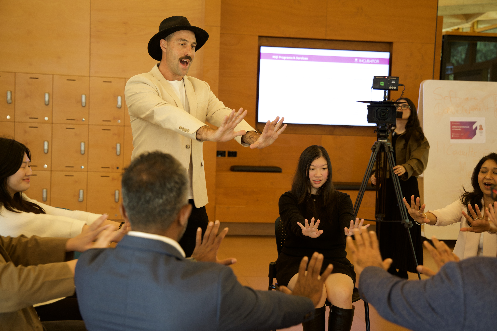
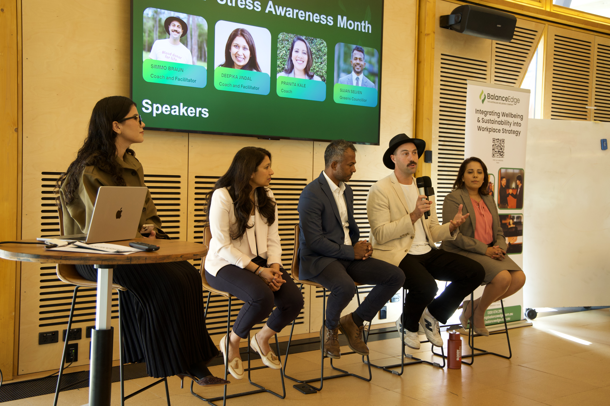

Marketing Intern at BalanceEdge
As part of a small startup team, I supported BalanceEdge's digital marketing and business growth initiatives. My responsibilities included creating content for LinkedIn and Instagram, conducting market research, developing marketing materials and supporting event planning and promotional campaigns.
I managed marketing activities from research through to execution. I analysed competitors and target audiences, developed content strategies, wrote copy, designed visuals and contributed to email campaigns, landing pages and webinar materials. I used Canva for design and Google Docs to write and organise all the content.
Created 60+ social media posts and contributed to marketing campaigns, promotional materials and company events over five months. I also developed documentation to support future marketing activities and maintain consistency across channels.
Working in a small team strengthened my ability to take initiative, manage competing priorities and turn ideas into practical outcomes. I developed a combination of creative problem-solving, analytical thinking and independent project delivery that I can apply across different business environments.
"A hardworking, valuable team member"
Nasima Esmaeli, Founder


